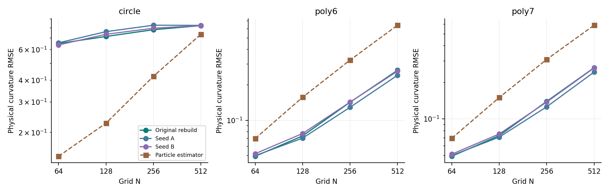
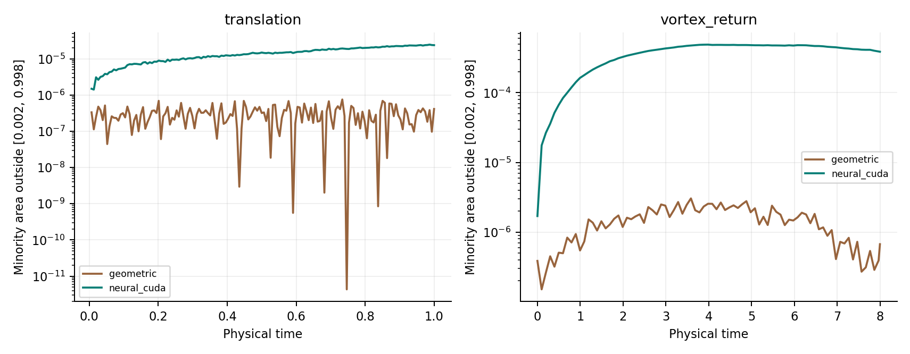
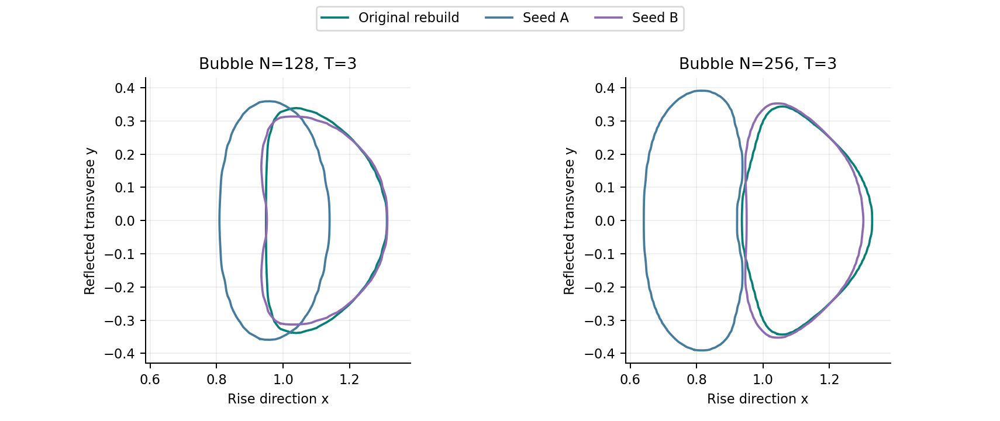
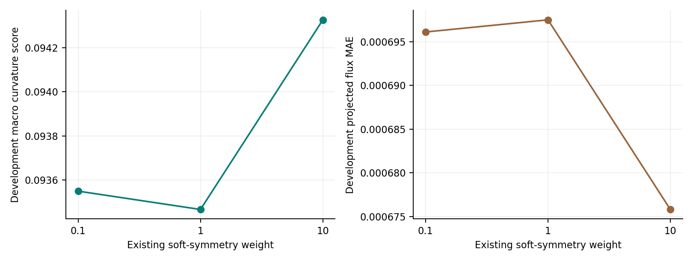
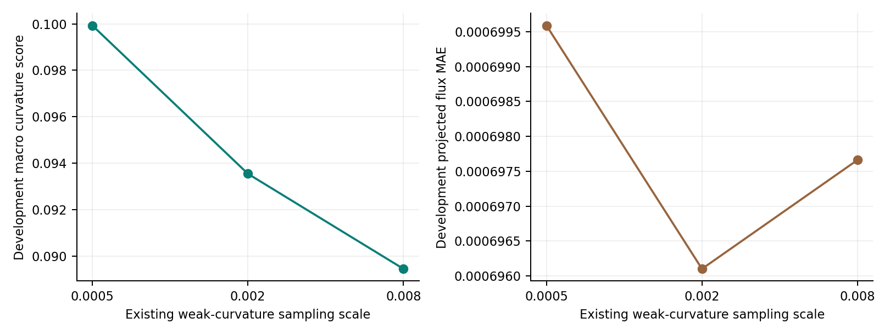
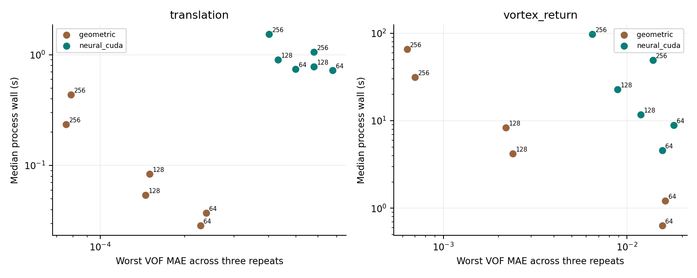

时间步与网格分离

保持 Overleaf 的网络、通量约束、曲率定义和求解流程；分别检验几何泛化、近纯尾迹、时间步敏感性、训练随机性和匹配误差目标的成本。
1,800 个基础模板 · 64 个物理曲率场 · 14 项毛细波配置 · 两组新增完整重训 · 72 条正式成本观测






新结果使用独立重训模型。旋转派生样本不增加独立几何数量；曲率共同支持和全部混合格分开评分。毛细波参考只含正幅值，细网格时间步差异保留。三次范围不表示置信区间；CPU 与 CPU+GPU 资源组合明确区分。软约束权重探索未达到预设改进门槛，默认模型保持原样。
完整数字、未达标项、参考定义和复现入口见文字报告与 CSV。